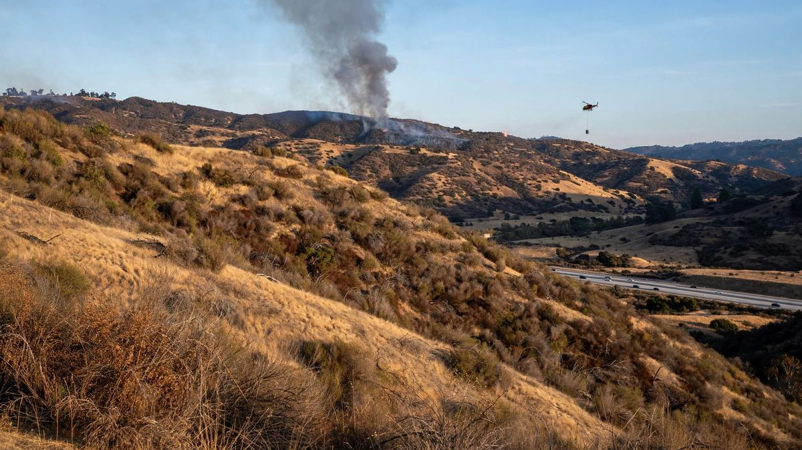

हेन्डरसन आगोले क्याम्प पेन्डलटनमा २,०८० एकड जलायो र I-5 फेरि बन्द गर्नुपर्यो
आगो बिहीबार रातिको १,११८ एकडबाट बढेर शुक्रबार मध्यदिनमा २,०८० एकड पुग्यो, नियन्त्रण अझै छैन। यसले क्याम्प पेन्डलटनको उत्तरपश्चिमतर्फ नियन्त्रण रेखा पार गर्यो र उत्तरतर्फको इन्टरस्टेट ५ फेरि बन्द गर्यो।

मुख्य बुँदाहरू
- अपडेट २१:३५ UTC। हेन्डरसन आगोले शुक्रबार मध्यदिनसम्म २,०८० एकड जलाइसकेको थियो र नियन्त्रण अझै ० प्रतिशत रहेको क्याल फायरले आफ्नो पछिल्लो अपडेटमा भन्यो। आगोले उत्तरपश्चिमतर्फ नियन्त्रण रेखा पार…
- क्याम्प पेन्डलटन, क्यालिफोर्निया। बिहीबार दिउँसो मरिन कोर बेस क्याम्प पेन्डलटनमा सुरु भएको झाडी आगो बिहीबार रातिसम्म करिब १,११८ एकडमा फैलियो, बेसभित्र खाली गर्ने आदेश दिन बाध्य बनायो र सान डिएगो र…
- हेन्डरसन आगो बेसको पश्चिमी भागमा, ओसनसाइड नजिकै बासिलोन रोड र लास पुल्गास रोड नजिक सुरु भयो। पूर्वी हावाले आगोलाई सुख्खा झाडीमा धकेल्यो। क्याल फायरका अनुसार ९० मिनेटभित्र करिब ४०० एकड जलिसकेको…
अपडेट २१:३५ UTC। हेन्डरसन आगोले शुक्रबार मध्यदिनसम्म २,०८० एकड जलाइसकेको थियो र नियन्त्रण अझै ० प्रतिशत रहेको क्याल फायरले आफ्नो पछिल्लो अपडेटमा भन्यो। आगोले उत्तरपश्चिमतर्फ नियन्त्रण रेखा पार गर्यो, र हवाई तथा जमिनका टोली थप स्रोत आउँदै गरेको अवस्थामा काममै रहे। उत्तरतर्फको इन्टरस्टेट ५ शुक्रबार फेरि बन्द भयो, ओसनसाइडको हार्बर ड्राइभमा र भान्डरग्रिफ्ट बुलभार्डमा। क्यालट्रान्सले उत्तर जाने चालकलाई स्टेट रुट ७८ हुँदै इन्टरस्टेट १५ प्रयोग गर्न भन्यो। ओसनसाइडको क्यालिफोर्निया हाइवे पेट्रोल कार्यालयले सान्टा आना हावाले आगोलाई पश्चिमतर्फ धकेलिरहेको र बाक्लो धुवाँले राजमार्गमा दृश्यता घटाउन सक्ने चेतावनी दियो।
क्याम्प पेन्डलटन, क्यालिफोर्निया। बिहीबार दिउँसो मरिन कोर बेस क्याम्प पेन्डलटनमा सुरु भएको झाडी आगो बिहीबार रातिसम्म करिब १,११८ एकडमा फैलियो, बेसभित्र खाली गर्ने आदेश दिन बाध्य बनायो र सान डिएगो र लस एन्जलस जोड्ने मुख्य राजमार्ग इन्टरस्टेट ५ केही समय बन्द गरायो।
हेन्डरसन आगो बेसको पश्चिमी भागमा, ओसनसाइड नजिकै बासिलोन रोड र लास पुल्गास रोड नजिक सुरु भयो। पूर्वी हावाले आगोलाई सुख्खा झाडीमा धकेल्यो। क्याल फायरका अनुसार ९० मिनेटभित्र करिब ४०० एकड जलिसकेको थियो। स्थानीय समय अनुसार साँझ ७:३२ सम्म आगो करिब १,११८ एकड पुगेको थियो र ७:४८ सम्म पनि नियन्त्रण ० प्रतिशत नै थियो, क्याल फायरका तथ्यांक उद्धृत गर्दै ब्लूमबर्गले जनाएको छ।
बेसभित्र खाली गर्ने आदेश
क्याम्प पेन्डलटनले ४१ एरिया भनेर चिनिने लास फ्लोरेस क्षेत्र खाली गर्न आदेश दियो। ११ एरियाको पेज फिल्ड हाउस र २१ एरियाको जिममा खाली गरिएकाहरूका लागि केन्द्र खोलियो। स्टुअर्ट मेसा रोड फायर बेस ग्लोरियातर्फ दुवै दिशामा बन्द भयो। लास पुल्गास रोड पनि बन्द भयो र लास पुल्गास गेट आपत्कालीन गाडीबाहेक सबैका लागि बन्द गरियो।
आगो फैलिँदै गर्दा लास पुल्गास ४३ एरियामा बिजुली गयो। बिहीबार दिउँसोसम्म अधिकारीहरूले कुनै घाइते र कुनै भवनमा क्षति नभएको बताएका छन्। आगोको कारणबारे अनुसन्धान भइरहेको छ।
इन्टरस्टेट ५ बन्द, त्यसपछि खुल्यो
धुवाँ र आगोका लप्का दिउँसोको अन्त्यतिर इन्टरस्टेट ५ तर्फ बढे। क्यालिफोर्निया हाइवे पेट्रोलले करिब ५ बजे राजमार्ग दुवै दिशामा बन्द गर्यो, सान ओनोफ्रे स्टेट बीच नजिकको बासिलोन रोडदेखि ओसनसाइडको हार्बर ड्राइभसम्म। करिब ६ बजे सबै लेन खुले, तर अवस्था बदलिए बन्द फेरि हुन सक्ने अधिकारीहरूले चेतावनी दिए। मेट्रोलिंकले सुरक्षित रहेसम्म ओरेन्ज काउन्टी र ओसनसाइडबीच रेल चलाइरहने बताएको छ।
कम्तीमा तीनवटा एयर ट्यांकर क्याम्प पेन्डलटन फायर डिपार्टमेन्टका भूमिगत टोलीसँग जोडिए र क्याल फायरका टोलीले पनि सघाए। बेसमाथि कालो धुवाँको ठूलो मुस्लो उठ्यो, जुन राजमार्गका चालकहरूले देख्न सक्थे।
खतरनाक दिनहरूमा सबैभन्दा ठूलो आगो
हेन्डरसन आगो बिहीबार दक्षिणी क्यालिफोर्नियामा सुरु भएका धेरै आगोहरूमध्ये सबैभन्दा ठूलो थियो। त्यो दिन गर्मी, कम आर्द्रता र सान्टा आना हावा चलेको थियो। लस एन्जलस र भेन्चुरा काउन्टीमा शनिबार राति ८ बजेसम्म रेड फ्ल्याग चेतावनी जारी थियो र राष्ट्रिय मौसम सेवाले मध्यमदेखि बलियो सान्टा आना हावा त्यसबेलासम्म रहने अपेक्षा गरेको थियो। आफ्ना उपकरणबाट नयाँ आगो सुरु हुने जोखिम घटाउन सदर्न क्यालिफोर्निया एडिसनले बिहीबार साँझसम्म करिब ६४,००० ग्राहकको बिजुली काटेको थियो।
लस एन्जलस काउन्टीमा, मालिबु नजिकको ब्रायसन आगोले करिब २०० एकड जलायो र त्यहाँ पनि खाली गर्ने आदेश दिनुपर्यो। हावा रहेसम्म आगो थप फैलिन सक्ने र नयाँ खाली आदेश आउन सक्ने चेतावनी अग्नि अधिकारीहरूले दिएका छन्।
स्रोतहरू
NBC 7 San Diego, Bloomberg via Moneyweb, FOX LA, City News Service via North County Chronicle
समयरेखा
- Oct 15, 2026सान्टा आना हावा, गर्मी र कम आर्द्रताले आगोको खतरा बढाएपछि दक्षिणी क्यालिफोर्नियाका केही भागमा रेड फ्ल्याग चेतावनी जारी छ।
- Oct 15, 2026हेन्डरसन आगो बिहीबार दिउँसो क्याम्प पेन्डलटनमा बासिलोन रोड र लास पुल्गास रोड नजिक सुरु हुन्छ।
- Oct 15, 2026करिब ९० मिनेटमा आगो करिब ४०० एकड पुग्छ। बेसभित्र खाली गर्ने आदेश दिइन्छ र लास पुल्गास रोड तथा लास पुल्गास गेट बन्द हुन्छन्।
- Oct 15, 2026करिब ५ बजे इन्टरस्टेट ५ ओसनसाइडमा बासिलोन रोड र हार्बर ड्राइभबीच दुवै दिशामा बन्द हुन्छ। करिब ६ बजे सबै लेन खुल्छन्।
- Oct 15, 2026साँझ ७:३२ सम्म आगो करिब १,११८ एकड अनुमान गरिन्छ र नियन्त्रण ० प्रतिशत नै रहन्छ।
- Oct 16, 2026शुक्रबार मध्यदिनसम्म आगोले २,०८० एकड जलाएको थियो र नियन्त्रण अझै ० प्रतिशत थियो। यसले उत्तरपश्चिमतर्फ नियन्त्रण रेखा पार गर्यो, र उत्तरतर्फको इन्टरस्टेट ५ हार्बर ड्राइभ र भान्डरग्रिफ्ट बुलभार्डमा फेरि बन्द भयो।
स्रोतहरू
- NBC 7 San Diego: Camp Pendleton brush fire grows to 1,000+ acres, I-5 reopened
- Bloomberg: Malibu and San Diego-area fires burn amid high-risk conditions
- FOX LA: Multiple brush fires erupt across LA County as powerful Santa Ana winds fuel red flag conditions
- City News Service via North County Chronicle: Fast-moving brush fire erupts at Camp Pendleton
- Times of San Diego via Las Vegas News: Brush fire at Camp Pendleton continues to spread, prompting more closures along Interstate 5
- Gizmodo: Santa Ana winds reignite wildfire season in Southern California